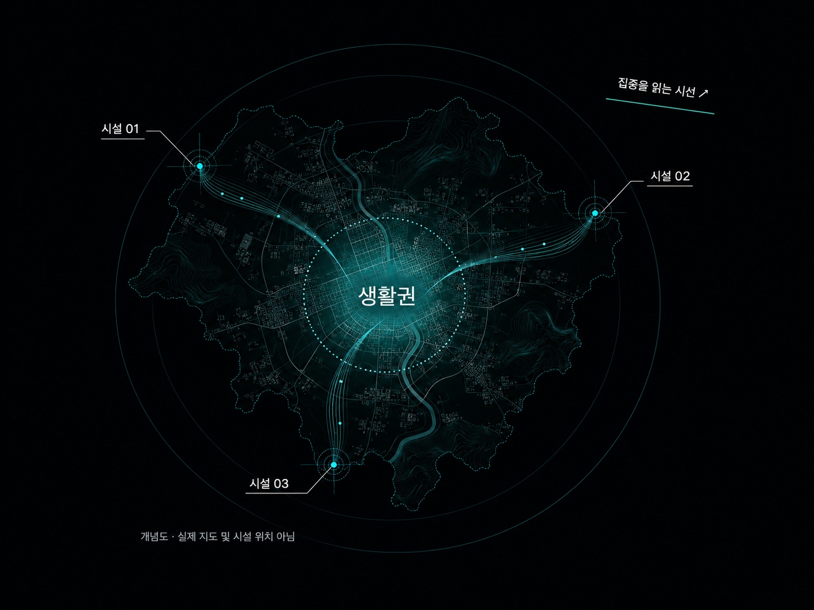

시설과 일상 사이의 거리
주변의 주거지와 생활권, 시설의 위치를 함께 살펴봅니다.
청주 소각시설 과밀집을 바라보는 환경 전시 프로젝트
폐기물을 처리하는 시설 주변에도
주민들의 일상이 있습니다.
같은 도시 안에서도
01 / WHY E.FACT
소각시설은 폐기물을 처리하는 기반시설입니다. 하지만 시설이 한 지역에 모일 때에는 처리의 효율뿐 아니라, 그 주변에서 살아가는 사람들의 환경과 일상도 함께 살펴야 합니다.
E.FACT는 청주 소각시설의 밀집 문제를 출발점으로, 시설의 변화와 환경 정보, 주민의 질문을 연결하는 프로젝트입니다. 멀게 느껴지는 환경 문제를 직접 탐색하고 생각할 수 있는 경험으로 바꾸고자 합니다.
게임에서는 가상의 미래를 탐험하고, 웹에서는 실제 기록과 공개 자료를 살펴봅니다. 체험에서 생긴 질문이 사실 확인으로, 사실 확인이 관심과 참여로 이어지도록 설계했습니다.
02 / THE QUESTION OF CONCENTRATION
시설의 수와 규모, 생활권과의 관계,
관리와 정보 공개를 함께 읽어야 합니다.

시설을 선택해 흐름을 겹쳐 보세요.
집중을 읽는 시선 ↗ 개념도 · 실제 지도 및 시설 위치 아님주변의 주거지와 생활권, 시설의 위치를 함께 살펴봅니다.
시설 수와 처리 규모가 어떻게 변화했는지 기록을 따라갑니다.
배출 관리와 환경 측정, 공개된 정보의 범위와 한계를 확인합니다.
03 / CHEONGJU AT A GLANCE
생활권 대기질과 사업장 배출자료를
구분해 표시합니다.
생활권 대기질
측정 시점과 자료 상태를 확인해 주세요.
측정 지점 선택
측정 항목
RECENT 24 HOURS
TODAY'S INSIGHT
↗생활권의 공기와 굴뚝의 배출 수치를 같은 의미로 읽지 않도록 구분해서 확인하세요.
쉽게 읽는 방법 보기 ↗04 / EXPERIENCE → EVIDENCE → ACTION
EXPERIENCE
게임 속 가상의 미래에서 단서를 발견하고, 지금의 환경에 대한 질문을 만듭니다.
게임은 가상의 세계를 다루는 전시 콘텐츠입니다.EVIDENCE
시설의 역할과 지역 현황, 변화의 기록을 살피며 체험과 현실을 구분해 이해합니다.
소각시설 이해하기 ↗ACTION
새로 알게 된 내용을 나누고, 시민의 질문과 참여가 이어질 수 있도록 연결합니다.
연대서명 살펴보기 ↗04 / EXPLORE THE ARCHIVE
READ THE ORIGINAL DATA
대기질과 사업장 배출자료는 다르게 측정됩니다.
A QUESTION CAN BECOME A CONNECTION
청주의 소각시설 과밀집 문제를 함께 고민하고, 연대의 나무에 여러분의 목소리를 더해 주세요.
연대서명 참여하기 ↗